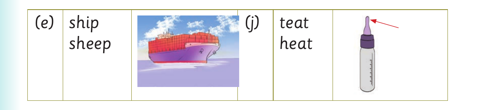

Replacing final sounds - Exercise 6 continued

For Replacing final sounds - Exercise 6 continued, the printed panel presents the source activity with these printed labels and instructions: (e) ship (j) teat sheep heat
(e) ship (j) teat sheep heat
(e) ship (j) teat
(e) ship
(e) ship (j) teat
(j) teat
62